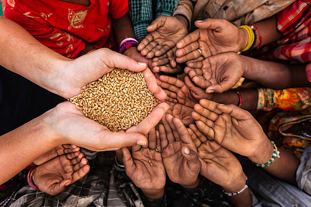

Getting started
The food images
STUDIES
READ
Background
list
FOOD IN THE 21ST CENTURY


Food is what we need in our daily lives.it is actually a basic need for all human beings and this is what they survive onto live strong and healthy.it gives humans the energy to do work and all kinds of stuff they need to survive.so basically it is quite important and needed.
TYPES OF FOOD


There are three types of food and those are carbohydrates,proteins and vitamins.They are needed for a balanced diet and that is why they are the basics of every imoportant meal.food, substance consisting essentially of protein, carbohydrate, fat, and other nutrients used in the body of an organism to sustain growth and vital processes and to furnish energy. The absorption and utilization of food by the body is fundamental to nutrition and is facilitated by digestion.
IMPORTANCE OF FOOD
Food is one of the basic necessities of life. Food contains nutrients—substances essential for the growth, repair, and maintenance of body tissues and for the regulation of vital processes. Nutrients provide the energy our bodies need to function. The energy in food is measured in units called calories.A well-balanced diet provides all of the: energy you need to keep active throughout the day. nutrients you need for growth and repair, helping you to stay strong and healthy and help to prevent diet-related illness, such as some cancers.
BENEFITS OF HEALTHY EATING
Top 10 Benefits of Exercise & Healthy Eating by Your Marque Team
Weight loss. Let's just get this one out of the way from the start. ...
A healthier heart. ...
Better cholesterol. ...
Resist the effects of aging. ...
A stronger immune system. ...
Better mood. ...
Better sexual function. ...
Less stress. May help you live longer.
Keeps skin, teeth, and eyes healthy.
Supports muscles.
Boosts immunity.
Strengthens bones.
Lowers risk of heart disease, type 2 diabetes, and some cancers.
Supports healthy pregnancies and breastfeeding.
Helps the digestive system function.
food shortages

Drought and conflict are the main factors that have exacerbated the problem of food production, distribution and access. High rates of population growth and poverty have also played a part, within an already difficult environment of fragile ecosystems.
Causes of food shortage

The reasons for hunger and food insecurity are many and vary from country to country, but generally, it is a result of conflict, poverty, economic shocks such as hyperinflation and rising commodity prices and environmental shocks such as flooding or drought.he reasons for hunger and food insecurity are many and vary from country to country, but generally, it is a result of conflict, poverty, economic shocks such as hyperinflation and rising commodity prices and environmental shocks such as flooding or drought.The reasons for hunger and food insecurity are many and vary from country to country, but generally, it is a result of conflict, poverty, economic shocks such as hyperinflation and rising commodity prices and environmental shocks such as flooding or drought.